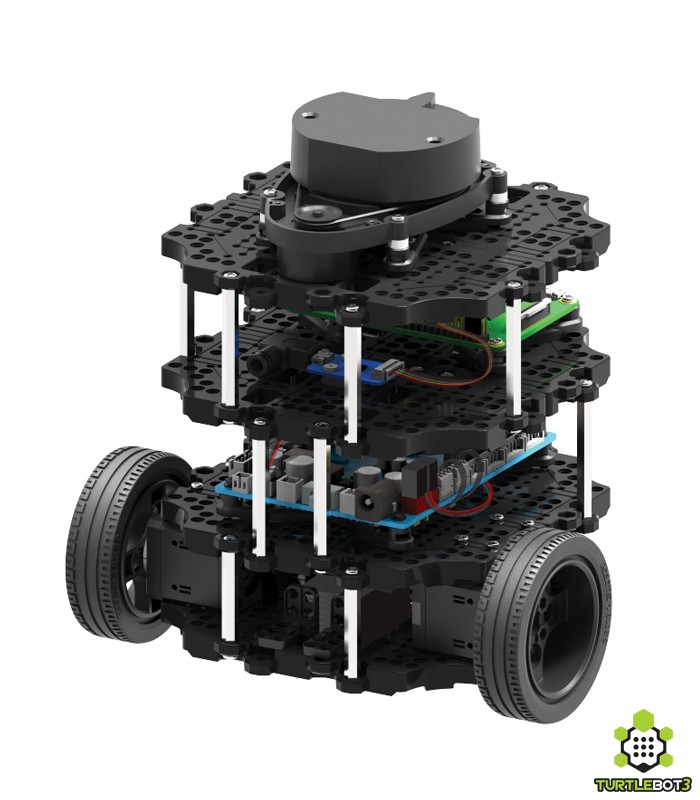
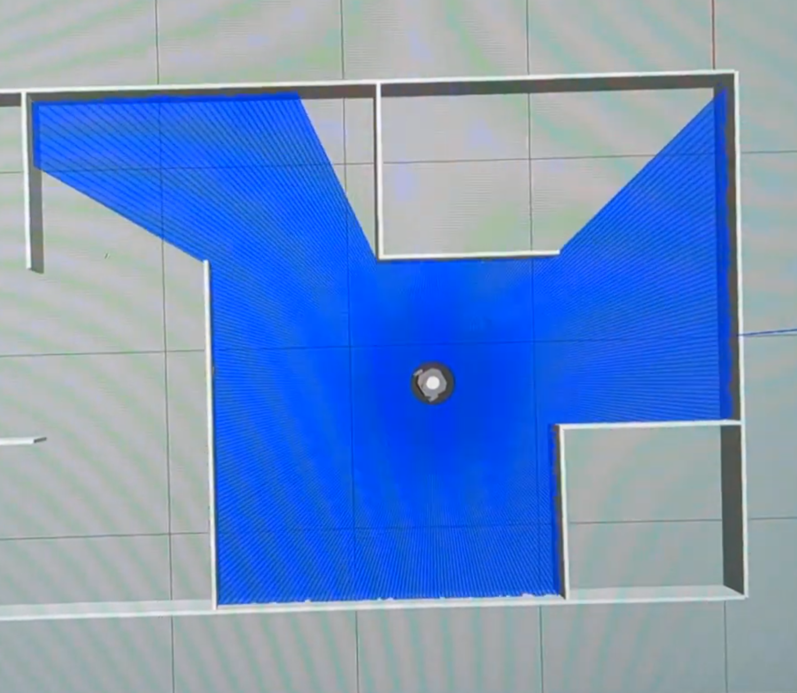

SLAM-Based Mobile Robot Navigation

This project implements a complete autonomous navigation pipeline for a mobile robot, beginning with map generation and ending with fully automated waypoint navigation. Using SLAM techniques, the robot first explores an environment—either in simulation using Gazebo or in the real world using a TurtleBot3 platform—to generate a map of its surroundings. This mapping process is performed using Cartographer and requires manual teleoperation to ensure full environmental coverage. Once completed, the generated map is saved and later used for localization and navigation tasks.

The navigation phase leverages the ROS2 Navigation2 stack, which enables the robot to localize itself within the saved map using adaptive Monte Carlo localization (AMCL) and plan feasible paths to specified goal locations. The AMCL algorithm allows one to dynamically adjust the number of particles in the filter used to determine the localization within the map. Proper initialization of the robot's pose in RViz2 is critical to ensure alignment between sensor data and the map. The system also allows for parameter tuning within configuration files to optimize navigation behavior for both simulated and real-world conditions.
A key component of this project is the custom-developed go_to_goal node. This node reads a sequence of
goal poses from a structured text file and publishes them one at a time to the /goal_pose topic. It continuously monitors feedback
from the navigation stack by subscribing to the appropriate action feedback topic, allowing it to determine when a goal has been successfully
reached before issuing the next command. This enables fully autonomous multi-goal navigation without manual intervention.
In this lab, we wanted to utilize simulation and real-world performance to see how things differ across different environments. It was also useful to be able to test the navigation algorithms and configurations in Gazebo's controlled environment before deploying to the physical TurtleBot3. Values such as costmap inflation radius, cost scaling factor, and dwb_controller thresholds had to be modified for each of these environments.
Overall, this project demonstrates a full-stack robotics workflow, integrating perception, localization, planning, and control into a cohesive autonomous system. It highlights practical experience with ROS2, real-time robotic systems, and the challenges of transitioning from simulation to real-world operation.
Two videos showing the system working physically on the TurtleBot3 and in simulation with Gazebo can be seen below.
Technical Highlights- ROS2 (nodes, topics, publishers/subscribers)
- Autonomous navigation (Navigation2 stack)
- SLAM (Simultaneous Localization and Mapping)
- Path planning and waypoint navigation
- Robot localization with adaptive Monte Carlo localization (AMCL)
- Coordinate frames and pose representation (position + quaternion orientation)
- Simulation with Gazebo
- Real-world robot deployment (TurtleBot3)
- Parameter tuning and system calibration
- Linux-based robotics development workflows
Current Location
North of Atlanta, GAUnited States of America